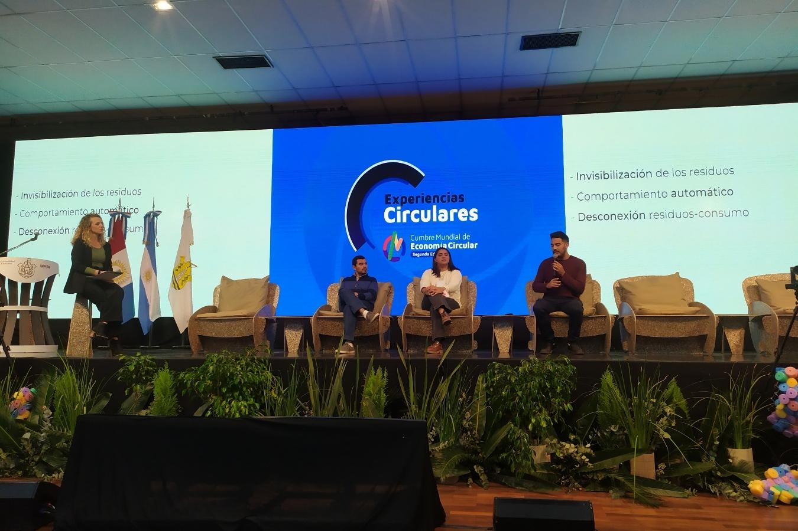

Fuimos parte de la Segunda Cumbre Mundial de Economía Circular.
EcoLink | Acciones
Junio 2022
 Durante los días 15 y 16 de junio se llevó a cabo en nuestra ciudad la Segunda Cumbre Mundial de Economía Circular. Más de 70 disertantes de todo el mundo participaron de distintas presentaciones. Además, diferentes empresas y emprendedores de triple impacto exhibieron sus productos y servicios en la Feria Circular.
Dentro de las actividades se presentaron paneles como “Financiamiento público y privado para diseñar un futuro sostenible”; “Economía Circular y Perspectiva de Género”, “Políticas públicas para promover las ciudades circulares”, “Debates académicos sobre Transformación Circular” y “Perspectivas continentales hacia el desarrollo sostenible”, además contó con la presencia de Juan Verde, líder global en desarrollo sostenible e impulsor de la economía verde.
Se contó con un espacio educativo ambiental que integró juegos interactivos y actividades cuyo objetivo fue introducir al público en general y alumnos de sexto grado de escuelas municipales a los conceptos en torno a la economía circular.
En simultáneo se llevó a cabo un Simposio de Movilidad Eléctrica y Sostenible. Allí se disertó sobre los avances en movilidad eléctrica a nivel local e internacional y su implicancia en el diseño de políticas ambientales.
Entre estas iniciativas, en el mes de octubre se realizará la Bienal de Diseño organizada conjuntamente con la Agencia de Desarrollo Económico de la Ciudad de Córdoba (ADEC).
Por otro lado, se expusieron las Experiencias Circulares, donde desde ECOLINK tuvimos la posibilidad de compartir junto expertos del conversatorio “Educación para la inclusión y la sostenibilidad”.
Estamos convencidos que la educación es la herramienta más poderosa que tenemos para poder cambiar hábitos, romper viejas culturas y avanzar hacia un futuro un poco más sustentable. orgullosos de haber sido protagonistas de esta Segunda Cumbre en nuestra ciudad.
“Debemos ser el cambio que queremos ver en el mundo”.
Mahatma Gandhi